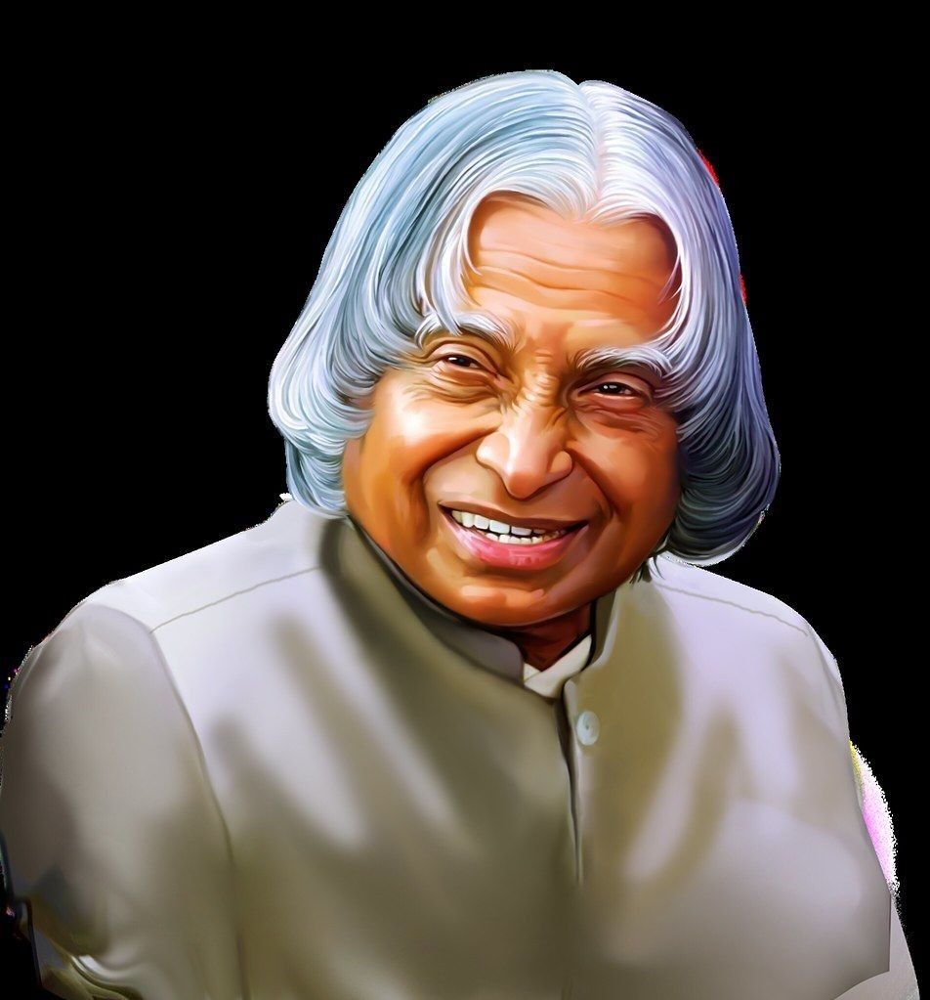
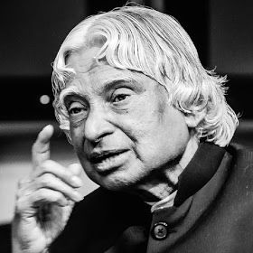

Scientist • Visionary • People's President Known as the “Missile Man of India”, Dr. Kalam inspired millions through his work in science, education, and national development.

Dr. A.P.J Abdul Kalam (1931–2015) was an Indian aerospace scientist and
statesman who served as the 11th President of India from 2002 to 2007.
He played a leading role in India's missile and nuclear programs and
was widely known as the "Missile Man of India".
Born in Rameswaram, Tamil Nadu, Kalam studied aerospace engineering and
worked with both DRDO and ISRO where he helped develop India's first
satellite launch vehicle and missile systems.
Even after his presidency, he continued teaching, writing books and
motivating students across the country.
Born in Rameswaram, Tamil Nadu.
Graduated in Aeronautical Engineering from Madras Institute of Technology.
Led the SLV-III project that launched India's Rohini satellite.
Key role in Pokhran-II nuclear tests.
Served as the 11th President of India.
Passed away while delivering a lecture at IIM Shillong.
Autobiography of Dr. Kalam.
Focused on inspiring youth.
A vision for transforming India.
Experiences from his presidency.
"Dream, dream, dream. Dreams transform into thoughts and thoughts result in action."